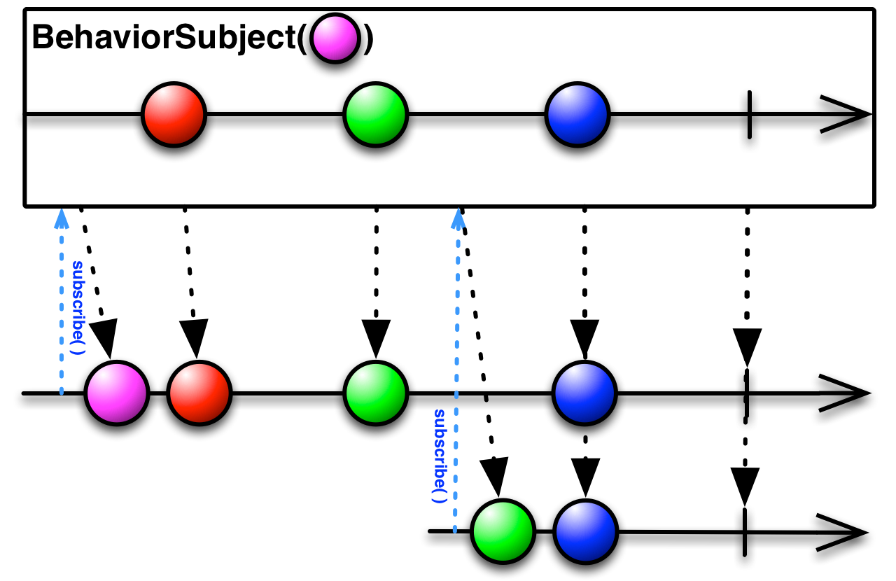

RxJS
Framework reactif
Programmation reactive est un flux d'évènements, avec un début et une fin (ou erreur)
Exemple de flux
- Clic sur un bouton
- Requete HTTP
- Connexion/déconnexion d'un utilisateur
- Saisie dans un champs texte
- Changement des paramètres de l'url
- Horloge
Observable
Emet des évènements
Permet de s'abonner aux évènements
Notifie tous ceux qui se sont abonné lorsqu'il envoie un évènement
Trois états
- Next: Nouvel élément dans le flux
- Complete: Le flux est terminé
- Error: Le flux est terminé par une erreur
const source = Observable.create((observer) => {
observer.next('Bonjour');
observer.next('le monde !');
observer.error(new Error('Erreur. :/'));
observer.complete();
});
S'abonner à un observable
source.subscribe(
(data) => displayMessage(data),
(error) => console.error('error', error),
() => console.log('complete')
)
of
of(1, 2, 3, 4, 5)
Crée un observable sur plusieurs valeurs statique (utile pour les test, ou envoyer une valeur unique)
interval
interval(1000)
Envoi un nombre qui s'incrémente toute les 1000 ms (1 seconde)
fromEvent
fromEvent(button, 'click')
S'abonne à un évènement DOM
Subject

Observable qui expose l'API Observer (méthodes next, complete, error)
BehaviorSubject
Lorsque l'on subscribe, on récupère la dernière valeur ou la valeur par défaut
ReplaySubject

Lorsque l'on subscribe, on récupère toutes les valeurs déjà envoyé dans le flux
AsyncSubject

On reçoit simplement la dernière valeur lorsque le flux est finit
of(1, 2, 3, 4, 5)
.pipe(
filter(x => x % 2 === 0),
map(x => x + 1),
)
.subscribe(console.log);
Operateur
- Permet de faire des modifications sur les donneés du flux
- Un opérateur s'abonne à un observable et retourne un autre observable
- Les opérateurs sont enchainné par la méthode pipe(op1(), op2(), ...)
Map
Applique une fonction de transformation à chaque élément du flux
Filter
Ne laisse passer dans le flux que les élément qui valident la condition
Scan
Reduit au fur et mesure la donnée avec un accumulateur (identique que reduce, sauf que reduce envoie à la fin le résultat)
Take
Prend x élément et arrête le flux
TakeWhile
Prend les élément tant que la condition est vrai
Merge
Merge plusieurs flux dans un seul flux
Créer un opérateur custom
const plusX = (x: number) => source$ => Observable.create(observer =>
source$.subscribe(
value => {
observer.next(value + x);
},
err => observer.error(err),
() => observer.complete()
)
);
Créer un opérateur custom
const plusX = (x: number) => map(value => value + 1);
Utilisation du site rxviz.com
Ce site permet de visualiser des flux rxjs, et écrire son propre code
Présente déjà des exemples utilisable
Faire les imports
const { interval } = Rx;
const { map } = RxOperators;
// Equivalent à
import { interval } from 'rxjs';
import { map } from 'rxjs/operators';
Pour une visualisation, il faut utiliser l'observable interval
La dernière ligne doit retourner un observable (l'outil fait un subscribe)
const { interval } = Rx;
const { map } = RxOperators;
interval(1000) // Envoi toutes les secondes un nombre qui s'autoincrémente
.pipe(
map(x => x + 1) // les opérateurs que l'on fait
)
TP1) Compteur
Partir de ce codeFaire un conteur de 5 valeur (1, 2, 3, 4, 5)
Ne garder que les nombres paire % 2 === 2)
Multiplier le code par 2
TP2) Autocomplétion
Partir de ce codeS'abonner à champ input et émettre les caractères (déjà fait)
Agréger les caractères en des mots
N'envoyer un élèment que toutes les secondes
Arrêter le flux lorsque que l'on tappe Enter
TP3) Pagination et trie
Créer deux boutons, un pour changer de page, un pour inverser le trie
Pour chaque clic sur le bouton de page, incrémenter la page
Pour chaque clic sur le bouton de trie, inverser le sens du trie
Combiner les deux dernière valeur pour lancer le rafraichissement de la page
TP3) Pagination et trie
TP4) Triple clic
Afficher un c lorsque l'on fait un triple clic
Solution TP 1
const { interval } = Rx;
const { take, map, filter } = RxOperators;
interval(1000)
.pipe(
take(5),
filter(x => x % 2 === 0),
map(x => x * 2)
);
Solution TP 2
const { fromEvent } = Rx;
const { map, filter, scan, debounceTime, takeWhile } = RxOperators;
const input = document.createElement('input');
input.setAttribute('placeholder', 'Type something');
output.prepend(input);
input.focus();
fromEvent(input, 'keydown').pipe(
map(e => e.key),
takeWhile(key => key !== 'Enter'),
filter(key => key !== ' '),
scan((acc, valeur) => acc + valeur),
debounceTime(1000)
)
Solution TP 3 : Création des boutons
const { fromEvent, combineLatest } = Rx;
const { map, filter, scan, tap, startWith } = RxOperators;
const pageButton = document.createElement('button');
pageButton.innerText = 'Page 0';
const sortButton = document.createElement('button');
sortButton.innerText = 'a';
output.prepend(pageButton);
output.prepend(sortButton);
Bouton page
const page$ = fromEvent(pageButton, 'click').pipe(
startWith(1),
scan(acc => acc+1),
tap(page => pageButton.innerText = `Page ${page}`)
)
Bouton Trie
const sort$ = fromEvent(sortButton, 'click').pipe(
startWith(true),
scan(acc => !acc),
map(sort => sort ? 'a' : 'z'),
tap(sort => sortButton.innerText = sort)
)
Combiner les trie et sort
combineLatest(page$, sort$).pipe(map(([page, sort]) => page+sort))
TP4) Triple Clic
const { fromEvent } = Rx;
const { mapTo, filter, bufferTime } = RxOperators;
fromEvent(document, 'click').pipe(
bufferTime(1000),
filter(clicks => clicks.length === 3),
mapTo('c')
)